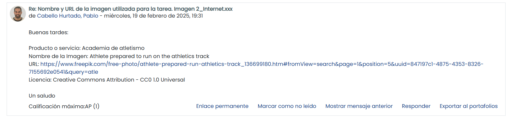

Aportación en el foro
Logo
URL del logotipo (creación propia o descargado)
Imagen
Licencias creative commons: He elegido la licencia CC BY-SA para mi imagen.
Justicicación (restricciones):
Quiero que otros puedan usar mi imagen y crear obras derivadas,
siempre que me reconozcan como autor y compartan las mejoras con
la misma licencia (SA = Share Alike).
Quien use la imagen debe reconocer mi autoría (BY) y, si modifica
o crea otra obra a partir de ella, debe licenciarla también con
CC BY-SA (Share Alike).
Internet
URL de la imagen (no la URL de la página web principal de la imagen)
{kind=link}
Composición
Composición 1000
Medida 1: Se redujo la resolución de la imagen a 1000px de ancho, lo que disminuye la cantidad de píxeles a procesar. (poner medida 1)
Medida 2: Se aplicó compresión JPEG para equilibrar calidad y tamaño de archivo, reduciendo significativamente el peso sin perder detalles visuales.(poner medida 2)
Composición 400
| Formato del recurso | Dimensiones (Ancho x Alto) | Tamaño (KB o MB). Usar la misma unidad de medida | |
|---|---|---|---|
| logo.svg | .svg | 48x48 unidades | 1,63KB |
| 1_Imagen.xxx | .png | 1587x2245 píxeles | 92.5KB |
| 2_Internet.xxx | .jpg | 6144x4096 píxeles | 10MB |
| 4_Composicion.xxx | .png | 1587x2245 píxeles | 1.07MB |
| 5_Composicion_1000.xxx | .jpg | 1000x1415 píxeles | 522KB |
| 6_Composicion_400.xxx | .png | 400x566 píxeles | 120KB |
Información sobre la canción
Tipo de licencia: CC0.
URL de la canción (no la URL de la página web principal de la canción)
Información sobre 1_audio.xxx y 2_audio.xxx
Justifica las decisiones tomadas en los audios (formatos y optimización de ficheros):
MP3: Es uno de los formatos más extendidos y compatibles en todos los navegadores y dispositivos.
Ofrece un buen equilibrio entre calidad de sonido y tamaño de archivo,
lo que lo hace ideal para contenido web.
AAC: Proporciona una mejor calidad a bitrates similares y es ampliamente utilizado en entornos móviles y en aplicaciones modernas,
complementando al MP3 para garantizar una mayor compatibilidad en diferentes dispositivos y plataformas.
Tabla
| Formato del recurso | Tamaño (KB o MB). Usar la misma unidad de medida | Duración (expresado en segundos) | |
|---|---|---|---|
| Canción descargada | .mp3 | 3.55 MB | 116 s |
| 1_audio.xxx | .mp3 | 699 KB | 29 s |
| 2_audio.xxx | .aac | 917 KB | 29 s |
Información sobre la composición del video
- Nombre de la aplicación utilizada para la edición del video: Adobe Premiere Pro
- Nombre de las transiciones que has utilizado: Disolucón cruzada
-
Captura de pantalla con la línea de tiempo del proyecto:
Información sobre 1_video.xxx y 2_video.xxx
Justifica las decisiones tomadas en los videos (formatos y optimización de ficheros):
Formato MP4 (H.264):
Elegí este formato por su alta compatibilidad y su excelente equilibrio entre calidad y tamaño de archivo.
Formato WebM:
Lo elegí como formato alternativo para asegurar la reproducción en navegadores modernos que prefieren formatos abiertos, garantizando así una mayor accesibilidad.
Tabla
| Formato del recurso | Tamaño (KB o MB). Usar la misma unidad de medida | Duración (expresado en segundos) | |
|---|---|---|---|
| Video (Presentación) | .mp4 | 101 KB | 8 s |
| Video (Capas) | .mp4 | 1,45 MB | 44 s |
| Video (Lienzo) | .mp4 | 744 KB | 23 s |
| 1_video.xxx | .mp4 | 16.3 MB | 59 s |
| 2_video.xxx | .webm | 6.63 MB | 59 s |